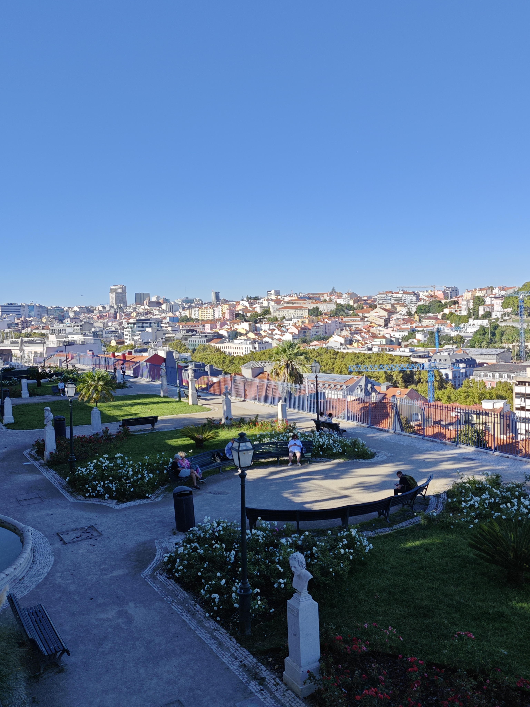
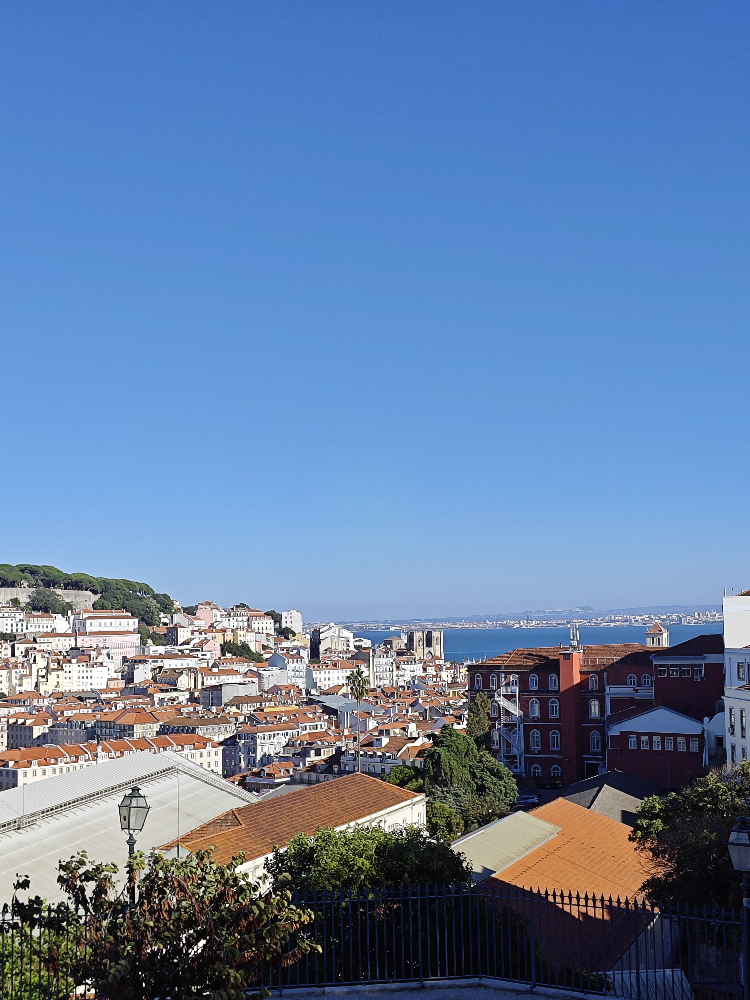
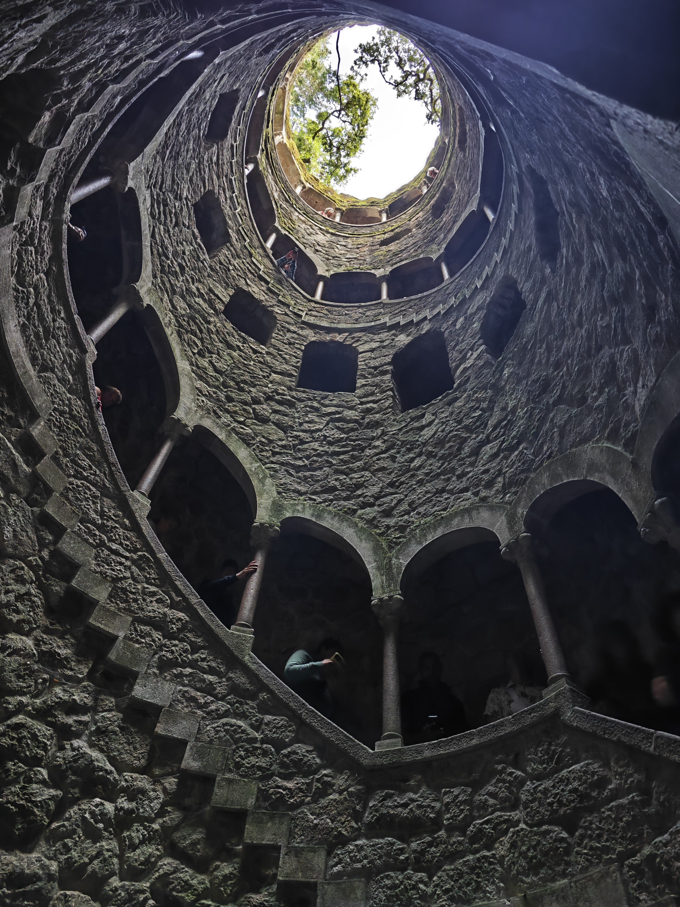
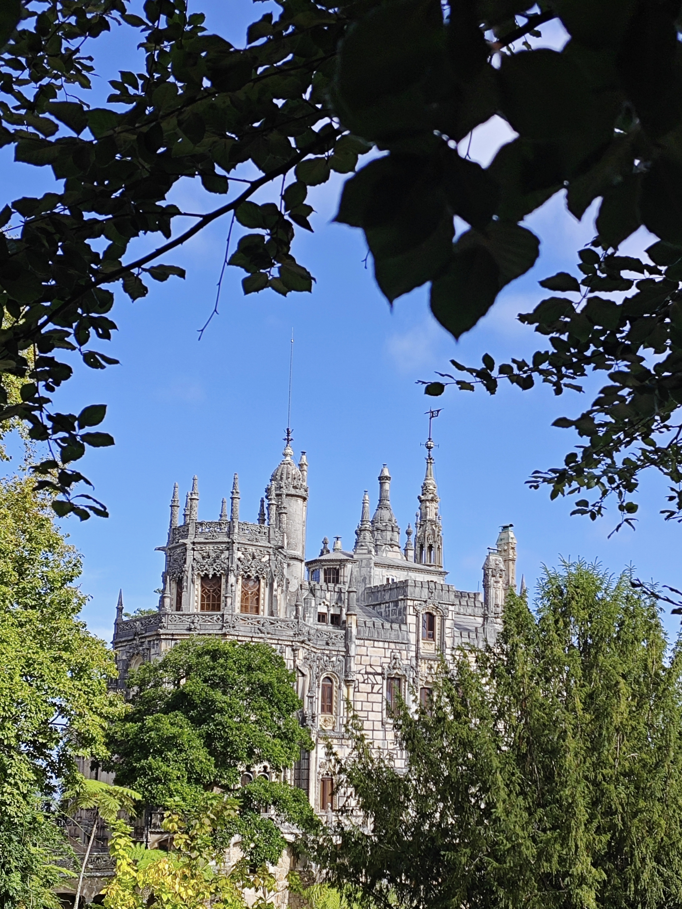
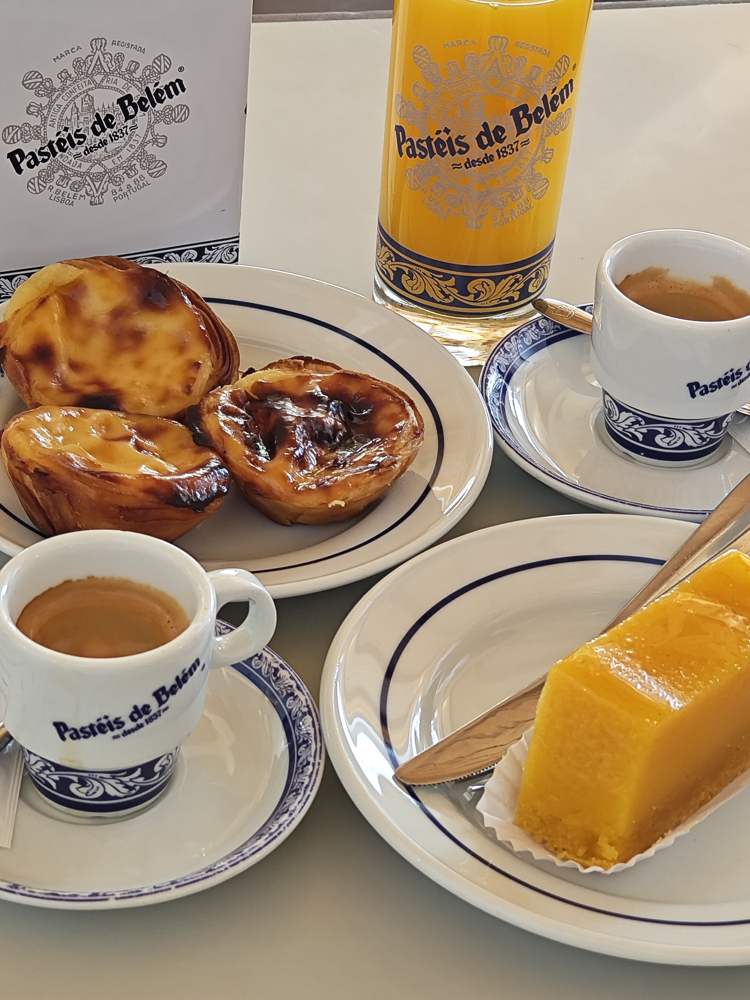

💡 À savoir avant de partir
La Lisboa Card
Tu peux la récupérer dès l'aéroport sans qu'elle soit activée — le décompte (24h/48h/72h) ne démarre que quand tu l'utilises pour la première fois (transport ou entrée d'un site), pas au moment où tu la récupères. Du coup l'astuce, c'est de regrouper tout ce que tu veux visiter dans les heures qui suivent : une 24h ou 48h suffit largement, pas besoin de la 72h.
Si tu prévois de voir peu de sites payants, ce n'est pas forcément rentable — dans ce cas prends juste les billets à l'unité en ligne.
Monastère des Jerónimos / Tour de Belém
Dès que tu as la carte (ou ton billet), réserve tout de suite un créneau en ligne — c'est sur réservation, pas juste en faisant la queue sur place. Prends de préférence un créneau le matin, et prévois quand même d'attendre pas mal à l'entrée.
Musées inclus dans la Lisboa Card
La carte donne accès gratuitement à 50+ musées/monuments — mais plusieurs sont fermés pour travaux en ce moment (le Musée national de l'Azulejo par exemple est fermé jusqu'à mi-2026), donc vérifie sur le site officiel avant de te déplacer pour un musée en particulier.
Deux qui valent le coup et qui n'étaient pas fermés :
- Museu Nacional dos Coches (musée des carrosses royaux) — à Belém, donc facile à combiner avec le monastère
- Museu Nacional de Arte Antiga — beaux-arts portugais, un peu moins touristique
Pastéis de Belém
Juste à côté du monastère. Tu peux manger sur place ou prendre à emporter :
- Sur place : tu t'assois, tu peux prendre un café tranquillement — sympa si t'es pas pressé, mais ça prend plus de temps
- Leur pâte est plus croustillante/dure que dans les autres pâtisseries — ça vaut le coup de comparer avec un pastel de nata pris ailleurs
- L'intérieur est assez dense, mais reste sucré quand même
🇵🇹 Lisbonne, comme on l'a fait
Pas un guide officiel — juste ce qu'on a fait, dans l'ordre, pour te donner une base
💡 À savoir avant de partir
La Lisboa Card
Tu peux la récupérer dès l'aéroport sans qu'elle soit activée — le décompte (24h/48h/72h) ne démarre que quand tu l'utilises pour la première fois (transport ou entrée d'un site), pas au moment où tu la récupères. Du coup l'astuce, c'est de regrouper tout ce que tu veux visiter dans les heures qui suivent : une 24h ou 48h suffit largement, pas besoin de la 72h.
Si tu prévois de voir peu de sites payants, ce n'est pas forcément rentable — dans ce cas prends juste les billets à l'unité en ligne.
Monastère des Jerónimos / Tour de Belém
Dès que tu as la carte (ou ton billet), réserve tout de suite un créneau en ligne — c'est sur réservation, pas juste en faisant la queue sur place. Prends de préférence un créneau le matin, et prévois quand même d'attendre pas mal à l'entrée.
Musées inclus dans la Lisboa Card
La carte donne accès gratuitement à 50+ musées/monuments — mais plusieurs sont fermés pour travaux en ce moment (le Musée national de l'Azulejo par exemple est fermé jusqu'à mi-2026), donc vérifie sur le site officiel avant de te déplacer pour un musée en particulier.
Deux qui valent le coup et qui n'étaient pas fermés (on n'a pas eu le temps d'y aller):
- Museu Nacional dos Coches (musée des carrosses royaux) — à Belém, donc facile à combiner avec le monastère
- Museu Nacional de Arte Antiga — beaux-arts portugais, un peu moins touristique
Pastéis de Belém
Juste à côté du monastère. Tu peux manger sur place ou prendre à emporter :
- Sur place : tu t'assois, tu peux prendre un café tranquillement — sympa si t'es pas pressé, mais ça prend plus de temps
- Leur pâte est plus dure moins croustillant que dans les autres pâtisseries — ça vaut le coup de comparer avec un pastel de nata pris ailleurs
- L'intérieur est assez dense, mais reste sucré quand même
Se déplacer en ville
- L'Elevador de Santa Justa est en travaux — on ne peut voir que l'extérieur
- Le petit funiculaire jaune (Elevador da Glória) est garé sur la pente en mode décor, on ne peut pas vraiment le prendre en ce moment — par contre le tram 25 lui roule normalement
- Attention aux pickpockets dans les trams, surtout quand c'est bondé
- Pour la carte de transport : billet à l'unité ou pass journée — si tu comptes faire plus de 4 trajets dans la journée, le pass journée devient rentable
- Taxi/VTC : évite en centre-ville, ça bouchonne pas mal. Par contre pour aller plus loin (Sintra, Belém…) c'est vraiment pas cher, et souvent il y a des réductions nouveau compte sur Uber/Bolt
Miradouros (points de vue) à ne pas rater, on était au château São Jorge puisque c'est inclus dans la carte de Lisbon
- Miradouro de Santa Catarina — bon spot coucher de soleil
- Miradouro das Portas do Sol / Miradouro de Santa Luzia (juste à côté l'un de l'autre) — vue dégagée + azulejos
- Miradouro da Senhora do Monte — un des plus hauts, moins touristique
- Miradouro da Graça
- Miradouro De São Pedro De Alcântara - un petit parc très agréable
- Parque Eduardo VII — pas le plus connu mais sympa en fin de journée
🏙️ Arrivée + balade dans la vieille ville
On a atterri, direction l'hôtel pour déposer les bagages, et ensuite on a juste flâné dans le centre historique sans itinéraire précis — Baixa, Rossio, on a marché au feeling. Pas besoin de tout caler à la minute ce jour-là.


En fin de journée on a cherché un restaurant pour voir un spectacle de fado (musique traditionnelle portugaise) — ambiance sympa.
On était au restaurant 'Trovas Antigas', Fado commencait à 20h, on est arrivé vers 19:30
🚗 Sintra + Cabo da Roca + Cascais
Ce jour-là on a enchaîné trois endroits dans l'ordre logique géographique :
Sintra (palais/jardins) → Cabo da Roca (le point le plus à l'ouest d'Europe continentale, superbe) → Cascais (bord de mer, ambiance balnéaire) → retour vers Lisbonne.
À Sintra, il y a plusieurs palais à découvrir. Comme nous avions peu de temps, nous n’en avons visité qu’un seul : la Quinta da Regaleira, sur la recommandation de Stéphanie.
C’est un endroit vraiment magnifique, avec ses jardins, ses passages mystérieux et son architecture originale. Pensez à réserver vos billets à l’avance !
Il y a également d’autres palais et monuments à proximité. Si vous avez plus de temps, cela peut être intéressant de les visiter, notamment le Palais national de Pena et le Château des Maures.


Cabo da Roca est le point le plus à l’ouest de l’Europe continentale. Situé au bord de l’océan Atlantique, il offre de magnifiques paysages avec ses falaises et une vue impressionnante sur l’océan. Attention, il y a souvent beaucoup de vent !
🗼 Belém le matin, vieille ville au coucher du soleil
On a fait Belém en demi-journée (monastère des Jerónimos, Tour de Belém ou Padrão dos Descobrimentos, et les fameux pastéis) — puis on est retournés dans la vieille ville pour le coucher de soleil sur l'autre demi-journée. Au final ça a pris pas mal de temps sur les deux côtés.

Si tu as plus de temps, tu peux rallonger l'un ou l'autre — Belém a de quoi occuper une bonne partie de la journée si tu prends ton temps, et côté vieille ville il y a plusieurs points de vue (Miradouros, voir la liste plus haut) sympas pour le coucher de soleil, pas juste un seul.